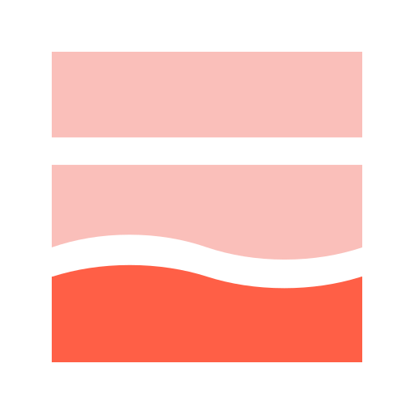
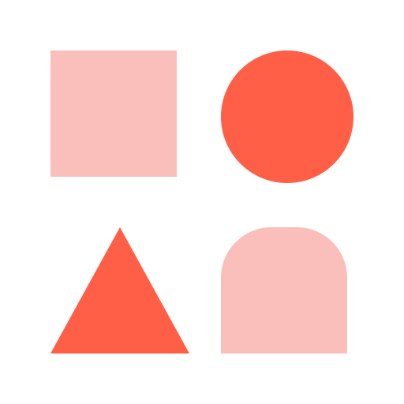

Eastwind Gourmet · Specialty food retail
Forecast-driven replenishment
You can’t forecast a gift box for a highway kiosk the way you do downtown.

Architecture
 Unity Catalog
Unity Catalog
 ML forecast
ML forecast
 App + Genie Agent
App + Genie Agent
One governed flow
Raw files
Five sources
POS salesERP inventoryProduct catalogStore masterHoliday calendar
Lakeflow
- Incremental ingest
- Bronze, silver, gold
- Expectations and quarantine
- Governed tables
- Least-privilege grants
- Lineage to source
- LightGBM, store × SKU × week
- MLflow, @champion gate
- Conformal p90 band

Lakebase- Recommended orders
- Manager decisions
- Append-only audit trail

- Managers review and approve
- Planners ask in plain language
One weekly job refreshes data, scores the @champion model, builds orders, loads Lakebase, and ingests decisions.